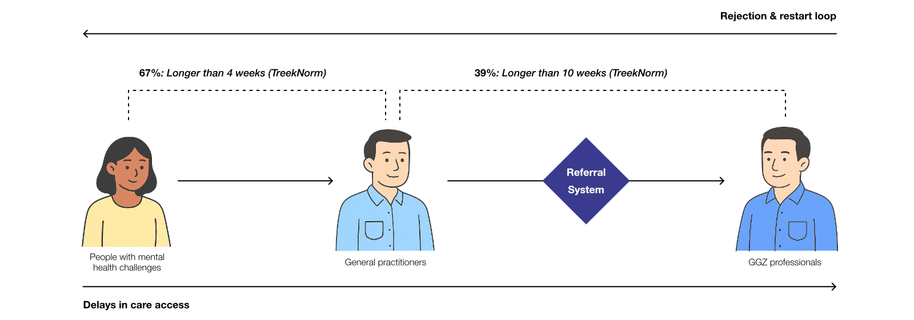
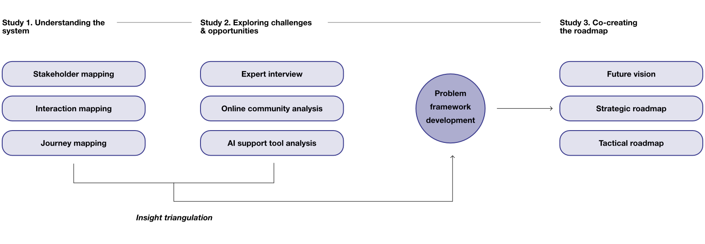
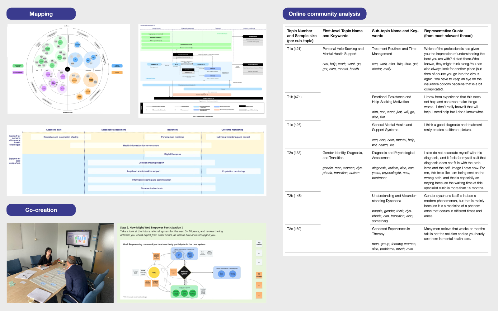
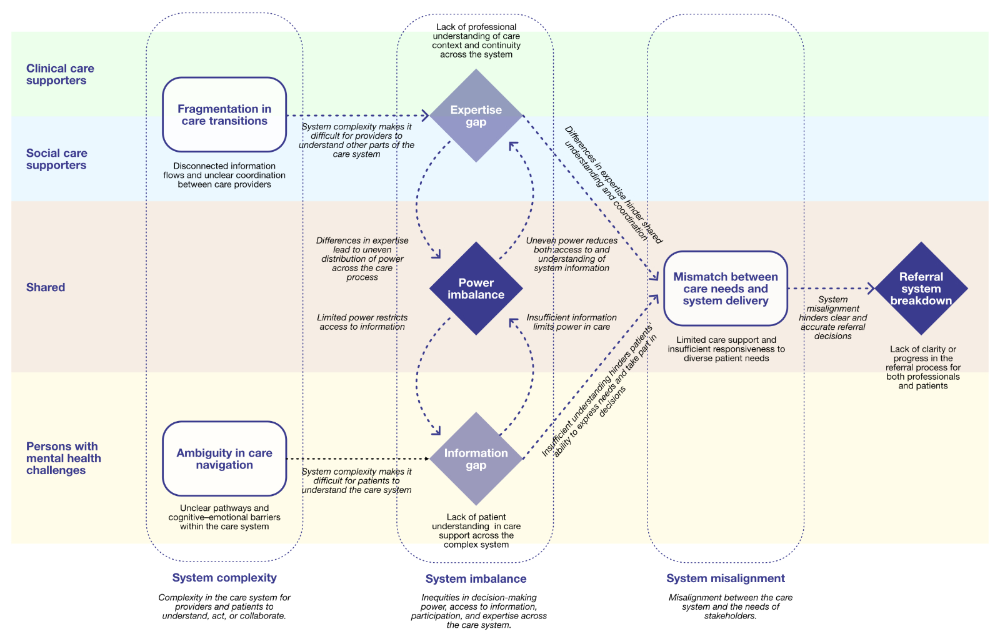
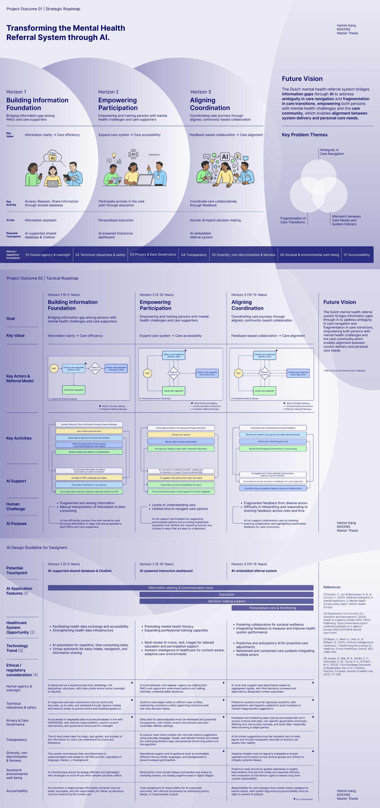

Transforming the Mental Health Referral System through AI
This project investigates how AI can be strategically integrated into the fragmented Dutch mental healthcare referral system to address persistent systemic challenges, including inefficiencies, repeated referral loops, and fragmented coordination. Employing a multi-method, design-led approach, the research identified three core problem themes and developed a three-horizon transformation roadmap.
How might we improve the mental health referral systems?
The Dutch mental healthcare system is under significant pressure. Over 100,000 individuals are currently on waiting lists for treatment (Netherlands Court of Audit, 2020), resulting in delays that pose challenges for both persons with mental health challenges and care supporters. Critically, 67% of cases exceed the recommended intake timeframe, and 39% surpass the treatment timeframe, compromising timely access and treatment outcomes (Dutch Healthcare Authority (NZa), 2024). This project focuses specifically on the General Practitioners (GP)-to-GGZ (specialized mental healthcare services in the Netherlands) referral process as a key leverage point for systemic improvement, aiming to address these challenges by focusing on system-level transformation through AI.

The research established that addressing systemic issues requires shifting beyond implementing isolated AI tools toward strategic, system-level approaches focused on multi-stakeholder care coordination. A key early decision was the adoption of the term ‘Persons with Mental Health Challenges (PMCs)’ to reflect a broader and more normalized conceptualization of mental health, encompassing needs beyond strictly clinical diagnoses.
Research Process.
The research process employed multiple methods, including system mapping, qualitative analysis through interviews and co-creation, and computational analysis of large-scale patient narratives from online communities. Structural and experiential insights were synthesized into a problem framework based on key recurring themes, which subsequently informed the design strategy for a future mental health referral system.


Synthesizing Insights into a System-Level Framework.
Cross-analysis showed that structural issues often turn into repeated patterns, which were identified as key problem themes. Mapping these patterns into a system-level view brought the main themes together and clarified where the system breaks down, forming a clear basis for what needs to change.

The framework visualizes interdependent problem themes such as ambiguity in care navigation, fragmentation in care transitions, and mismatch between needs and delivery. It served as a conceptual bridge between problem diagnosis and strategic transformation, shaping the foundation for the AI-enabled roadmap that followed.
A co-created roadmap toward a future vision.
Based on the insights, a future vision and strategic roadmap were developed and iteratively refined through an online co-creation process with real stakeholders. This method validated key insights, strengthened the initial roadmap, and reduced the time burden on healthcare professionals through a tailored snowballing-iteration approach. The final output is a three-horizon roadmap that operationalizes the future vision for an AI-supported Dutch mental healthcare referral system. Each horizon outlines stepwise transformation and integrates AI design guidelines grounded in EU ethical and regulatory principles, ensuring responsible and human-centred AI adoption.

The roadmap reframes the referral system from a gatekeeping structure into a dynamic network that supports continuous information flow, participatory decision-making, and equitable collaboration between actors. It demonstrates how AI can evolve from assisting simple information tasks (H1) to enabling predictive coordination and shared decision-making (H3), emphasizing AI as an enabler — integrated with other elements of the roadmap to support the transformation of the Dutch mental healthcare referral system toward its future vision, and applied only within the scope that enables human challenges to be addressed.